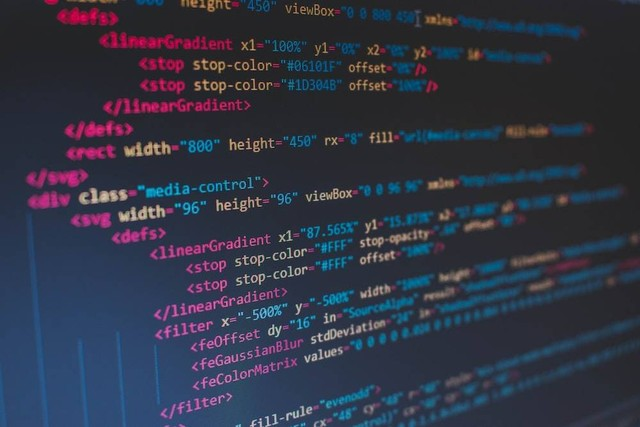

Apaitu Teknologi
Teknologi telah menjadi bagian tak terpisahkan dari kehidupan kita saat ini. Dalam beberapa dekade terakhir, perkembangan teknologi telah mengubah cara kita berkomunikasi, bekerja, belajar, dan bahkan bersenang-senang. Baik secara individu maupun dalam masyarakat secara keseluruhan, teknologi telah memberikan dampak yang signifikan dan transformasional. Dalam esai ini, kita akan mengeksplorasi berbagai aspek penting dari teknologi dan bagaimana pengaruhnya terhadap kehidupan kita. Salah satu aspek paling mencolok dari teknologi adalah kemampuannya untuk meningkatkan efisiensi dan produktivitas. Alat-alat dan perangkat teknologi yang inovatif memungkinkan kita untuk melakukan tugas-tugas yang lebih cepat dan lebih efisien. Misalnya, komputer dan perangkat lunak telah mengubah cara kita bekerja di berbagai bidang, mempercepat pemrosesan data, dan meningkatkan kemampuan analisis. Dalam industri manufaktur, otomatisasi dan robotika telah menggantikan pekerjaan manual yang berulang, mengurangi kesalahan manusia, dan meningkatkan produksi. Dengan demikian, teknologi telah membantu kita meningkatkan efisiensi dan produktivitas dalam berbagai aspek kehidupan kita.

Selain itu, teknologi juga telah mengubah cara kita berkomunikasi dan berinteraksi satu sama lain. Melalui perkembangan internet dan perangkat telekomunikasi seperti smartphone, kita sekarang dapat terhubung dengan orang-orang di seluruh dunia dengan cepat dan mudah. Pesan teks, panggilan video, dan media sosial telah menjadi alat utama komunikasi yang memungkinkan kita untuk tetap terhubung dengan keluarga, teman, dan rekan kerja kita, terlepas dari jarak geografis. Selain itu, teknologi telah memfasilitasi pertukaran informasi yang cepat dan mudah, mengubah cara kita mengakses berita, sumber daya pendidikan, dan informasi umum lainnya. Kita dapat memperoleh pengetahuan baru, belajar keterampilan baru, dan terus mengikuti perkembangan terbaru dalam berbagai bidang melalui internet.
Mengapa teknologi terhubung dengan coding?
Teknologi dan coding saling terkait erat. Teknologi adalah fondasi untuk pengembangan dan implementasi kode atau program. Coding, atau pemrograman, adalah cara untuk menciptakan solusi teknologi melalui penulisan instruksi-instruksi yang dapat dipahami oleh komputer. Teknologi memberikan landasan dan infrastruktur yang diperlukan untuk mengembangkan dan menjalankan kode. Contohnya, bahasa pemrograman, perangkat lunak, perangkat keras komputer, sistem operasi, dan lingkungan pengembangan yang diperlukan untuk menulis, menguji, dan menjalankan kode. Teknologi juga memberikan kemampuan dan sumber daya yang diperlukan agar kode dapat diimplementasikan dan digunakan oleh pengguna.
Di sisi lain, coding adalah keterampilan dan proses yang digunakan untuk menciptakan aplikasi, perangkat lunak, situs web, atau sistem komputer lainnya. Melalui coding, kita dapat mengontrol dan memanfaatkan teknologi untuk memenuhi kebutuhan dan tujuan spesifik. Dalam coding, kita menggunakan bahasa pemrograman untuk menuliskan algoritma, instruksi, dan logika yang akan dijalankan oleh komputer. Kode ini kemudian diterjemahkan oleh kompiler atau interpreter menjadi instruksi mesin yang dapat dipahami oleh komputer. Dengan demikian, teknologi dan coding saling melengkapi dan mempengaruhi satu sama lain. Teknologi memberikan infrastruktur dan alat yang diperlukan untuk mengembangkan dan menjalankan kode, sedangkan coding memungkinkan kita untuk memanfaatkan teknologi dengan menciptakan solusi, aplikasi, atau sistem yang sesuai dengan kebutuhan dan tujuan kita. Tanpa coding, teknologi tidak dapat dimaksimalkan atau diimplementasikan secara efektif, dan tanpa teknologi, coding tidak akan memiliki wadah atau landasan untuk dijalankan.